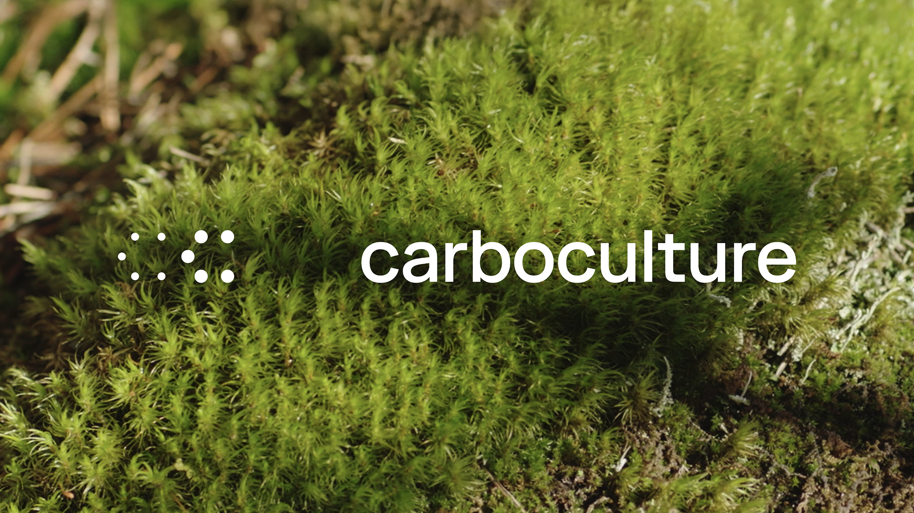
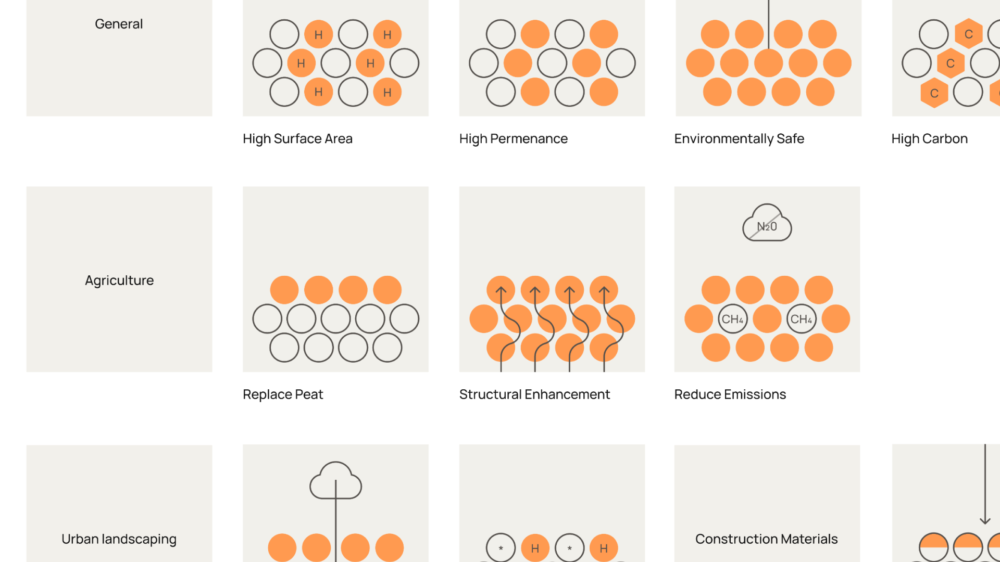
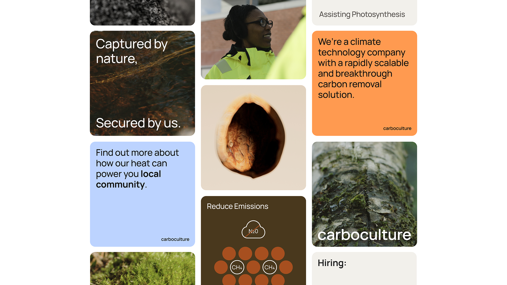
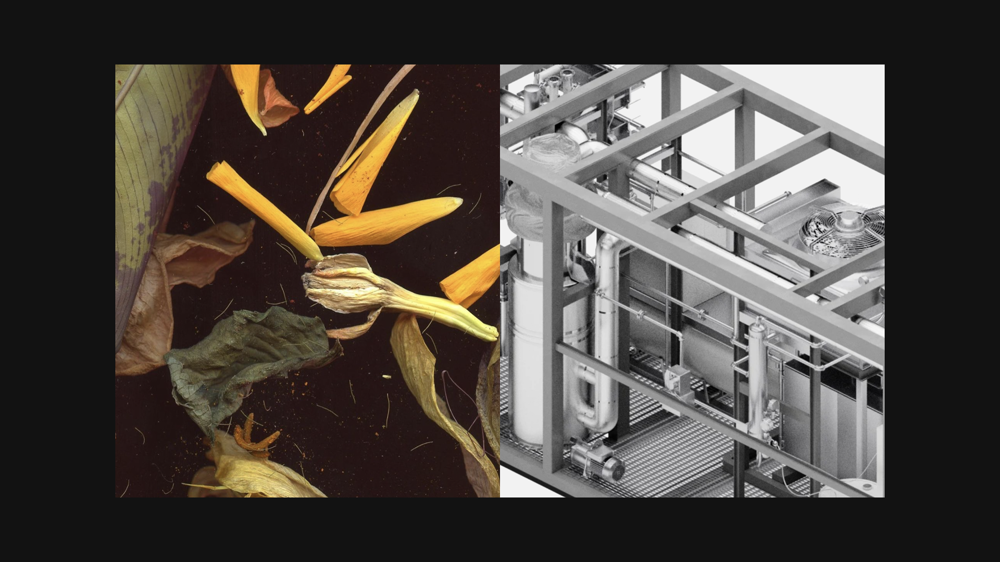
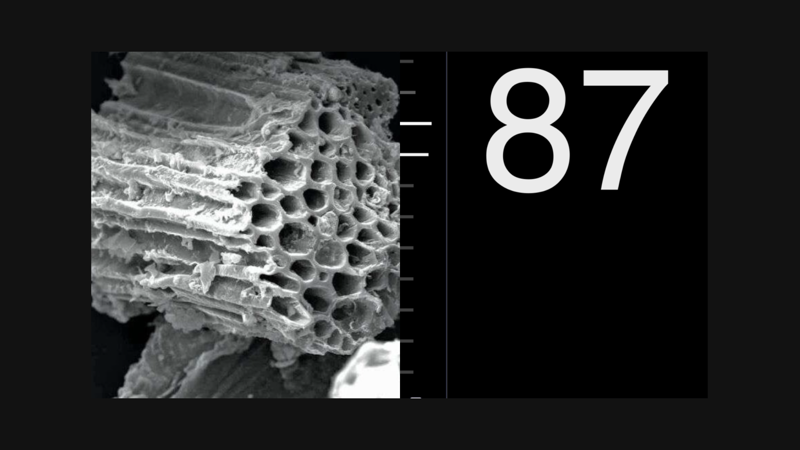
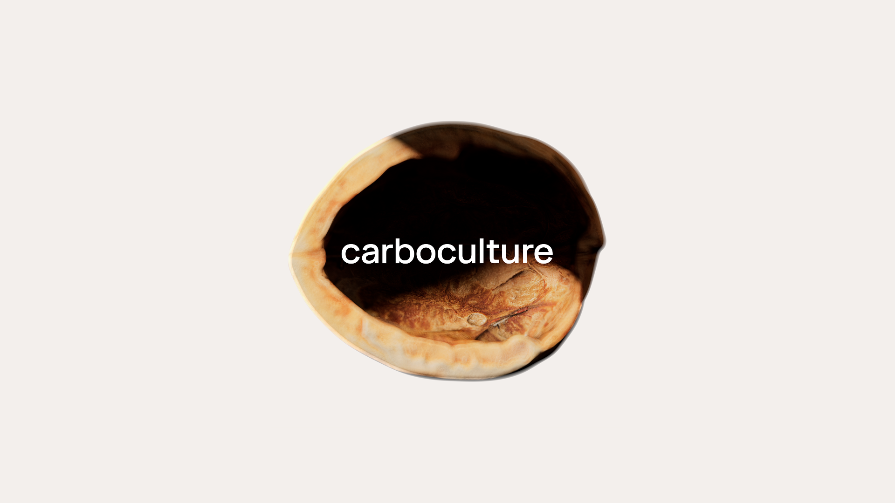

Making carbon removal tangible
We translated a complex technology into a clear, engaging, and visually compelling experience, without losing its depth.
Through a full-spectrum design approach, we developed a new brand identity and website, alongside a flexible system spanning brand, product, and storytelling.
From early explorations to a cohesive visual language, we brought Carbo Culture’s process to life.
We created custom 3D assets, CGI, motion design, and filmed content to make the science both accessible and distinctive.
The result is a clearer narrative, stronger presence, and a platform built to support growth and partnerships.





